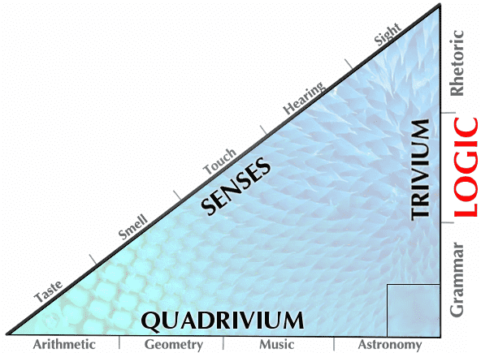
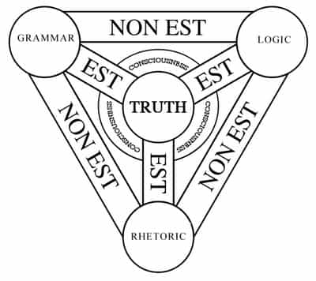
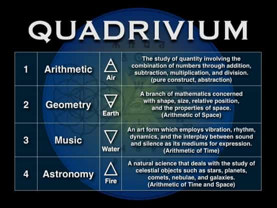

is an aspiring philosopher king, living the dream, travelling the world, hoarding FRNs and ignoring Americunts. He is a European at heart, lover of Latinas, and currently residing in the USA.


The ancient Greek and Roman civilizations were periods of rapid cultural growth and advancement. Over two thousand years ago, these cultures developed an education system that persisted until the 20th century. Known as the liberal arts, they were the essential tools a free person (from the Latin liberalis: “worthy of a free person”) must know to become a functioning member of society.
The importance of a liberal arts education was known from before the time of Christ until the turn of the 20th century. While modern democracy is a failed institution, especially in contrast with benevolent monarchy, it is possible that with a well educated populace, democracy could work. The liberal arts represented this basic level of education, and comprised seven different fields, which will be briefly examined here.
The Seven Liberal Arts, Giovanni di ser Giovanni Guidi (1406-1486)
The liberal arts can be traced to Plato, who thoroughly prescribed them in perhaps his most famous work, The Republic. Plato’s most famous student, Aristotle, stated that an educated man should be capable of considering and investigating any idea or concept thoroughly without necessarily embracing or dismissing it. Seneca the Younger, a Roman Stoic philosopher who lived from 4 BC to 65 AD, and advisor to Emperor Nero, was a strong advocate of the liberal arts.
The Stoics, founded in the 3rd century BC in Athens, believed in a rational outlook on life, that harmful emotions stem from errors in judgment and reasoning, and stressed the importance of maintaining a will in accord with nature, and that one’s actions should be judged more importantly than one’s speech. Logic was an important component of a successful man, and “virtue consists in a will that is in agreement with nature.” In the realm of interpersonal relationships, one is stressed to “be free from anger, envy, and jealousy.”
The liberal arts also were emphasized heavily in Hellenistic Greece, described as the “enkuklios paideia” or “education in a circle.” They were divided into four scientific arts—music, arithmetic, geometry, and astronomy, and three humanities—grammar, logic, and rhetoric. These were divided into two main groups: The Trivium, representing the three humanities, was taught first as a framework for observing and understanding what the five senses of sight, sound, taste, touch, and smell were perceiving.
The Quadrivium was the upper division and included the four scientific arts. Together, the seven liberal arts represent the thinking skills, and served as a basis for the education of all. Those who wished to specialize would first obtain an education in the liberal arts before proceeding to the practical arts (medicine, architecture) or other fields such as philosophy or theology.

The purpose of learning the arts is to train the mind how to think (as opposed to what to think). By combining the seven liberal arts with the five senses, one can distinguish between reality and fiction. This can be visually represented with a Pythagorean triangle.

The Trivium (literally, the place where three roads meet), known as the elementary three, represent the basic tools needed and was taught before the Quadrivium. The word trivia (tri=3 via=road) comes directly from the trivium. The trivium includes General Grammar, Formal Logic, and Rhetoric. While technically simpler than the more advanced subjects in the Quadrivium, many flaws in logic and reasoning can be traced back to failure to adequately learn the basics found in the Trivium.
Grammar is the systematic method of gathering raw data and ordering the facts of reality into a consistent body of knowledge. Grammar includes the mechanics of language, properly identifying and describing information perceived by the five senses.
Logic or Dialectic is the mechanics of thought and analysis, the process of identifying fallacies or errors in reasoning, and removing contradictions.
Rhetoric or Wisdom is the application of language in order to persuade.
| [1] General Grammar | [2] Formal Logic | [3] Classical Rhetoric |
|---|---|---|
| Answers the question of the Who, What, Where, and the When of a subject. | Answers the Why of a subject. | Provides the How of a subject. |
| Discovering and ordering facts of reality comprises basic, systematic knowledge. | Developing the faculty of reason in establishing valid [i.e., non-contradictory] relationships among facts is systematic understanding. | Applying knowledge and understanding expressively comprises wisdom or, in other words, it is systematically useable knowledge and understanding. |
The scientific arts include music, arithmetic, geometry, and astronomy. After learning the basic skills of the Trivium, which are applicable to all other studies, the scientific arts known as the Quadrivium would be studied. The Quadrivium “place where four roads meet” include arithmetic, geometry, music, and astronomy.

Arithmetic is the study of the number, a pure abstraction outside of space and time. It is the study of quantities.
Geometry is a number in space, the study of magnitude at rest.
Music is a number in time; the application of the theory of numbers. It is the study of the relations between quantities.
Astronomy is a number in space and time. It is the study of magnitude inherently moving.
Grammar = Knowledge = What?
Logic = Reason = Why?
Rhetoric = Communication = How?
Arithmetic = Formal = Do
Geometry = Visual = See
Music = Artistic = Feel
Astronomy= Exploration = Seek
By developing these basic skills, men would have the basic tools they needed to live a fulfilling and satisfying life, and to explore their emotions, dreams, ambitions, and desires.
In ancient Greece, all free men were expected to obtain a basic liberal arts education. Women received a limited public education which focused on physical fitness, how to sing, dance, and play instruments. These were not seen as “childish endeavors” but indeed a strict and formal education system was established that provided a complementary, but important role in society, a foil to the men who were trained in logic and reason.
In the 17th and 18th centuries, the entirety of human knowledge was consolidated into a series of volumes known as the “encyclopedia” which translates as “complete instruction or complete knowledge.” Almost every major culture over the past 2,000 years has adopted the seven liberal arts. The Fellowcraft Degree commands all Freemasons to study them, and indeed much of Freemasonry is based upon principles found in the seven.

Yale University, R.I.P. 1701-2016
Today, a liberal arts education is no longer even available at so-called “liberal arts” schools. The wisdom found in the seven basic liberal arts is the basis of every major civilization and advancement since before Christ. Only in the last few decades has this system been decimated.
In the image from Yale above, we can clearly see failures of the very first lesson of grammar. Without understanding grammar, no further education can be learned. The internet offers a vast array of knowledge to almost every person alive today. While our institutions may have failed us, a neomasculine man must develop his mind, as well as his body, and I encourage all to study the liberal arts.
Perhaps we will examine these subjects in further detail in future articles.
Read More: My Education Was a Complete Waste of Time